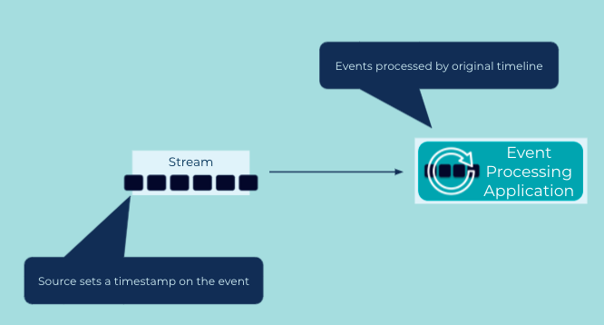

Event-Time Processing
Consistent time semantics are of particular importance in stream processing. Many operations in an Event Processor are dependent on time, such as joins, aggregations when computed over a window of time (e.g., 5-minute averages), and the handling out-of-order and "late" data. In many systems, developers have the choice between different variants of time for an event:
- Event-time, which captures the time at which an event was originally created by its Event Source.
- Ingestion-time, which captures the time an event was received on the event stream in an Event Streaming Platform.
- Wallclock-time or processing-time, which is the time at which a downstream Event Processor happens to process the event (which can be milliseconds, hours, months, etc. after event-time) . Depending on the use case, developers need to pick one variant over the others.
Problem
How do we implement event-time based processing of events?
Solution

For event-time processing, the Event Source must include a timestamp in the event (e.g., in a data field or header metadata) that denotes the time at which the event was created by the source. Then, on the consuming side in an Event Processing Application, we need to extract this timestamp from the event, which allows the application process events based on their original timeline.
Implementation
ksqlDB
In the streaming database ksqlDB, every event/record has a system-column named ROWTIME representing the timestamp for the event, which defaults to the time at which the event was originally created by its Event Source. For example, when we create a ksqlDB STREAM or TABLE from an existing Kafka topic, then the timestamp embedded in a Kafka message is extracted and assigned to the event in ksqlDB. (cf. CreateTime of a Kafka ProducerRecord and the Kafka message format).
Sometimes, this default behavior of ksqlDB is not what we want. Maybe the events have a custom data field containing their actual timestamps (e.g., some legacy data that has been around for a while was ingested into Kafka only recently, so we can't trust the CreateTime information in the Kafka messages because they are much newer than the original timestamps). To use a timestamp in the event payload itself, we can add a WITH(TIMESTAMP='some-field') clause when creating a stream or table, which instructs ksqlDB to get the timestamp from the specified field in the record:
CREATE STREAM my_event_stream
WITH (kafka_topic='events',
timestamp='eventTime');
Kafka Streams
The Kafka Streams client library of Apache Kafka provides the TimestampExtractor interface for extracting the timestamp from events. The default implementation retrieves the timestamp from the Kafka message (see discussion above) as set by the producer of the message. Normally, this setup results in event-time processing, which is what we want.
But for those cases where we need the timestamp from the event payload, we can create our own TimestampExtractor implementation:
class OrderTimestampExtractor implements TimestampExtractor {
@Override
public long extract(ConsumerRecord<Object, Object> record, long partitionTime) {
ElectronicOrder order = (ElectronicOrder)record.value();
return order.getTime();
}
Generally speaking, this functionality of custom timestamp assignment makes it easy to integrate data from other applications that are not using Kafka Streams or ksqlDB themselves.
Additionally, Kafka has the notion of event-time vs. processing-time (wallclock) vs. ingestion time, similar to ksqlDB. Clients like Kafka Streams make it possible to select which variant of time we want to work with in our application.
Considerations
When considering which time semantics to use, it comes down to the problem domain. In most cases, event-time processing is the recommended option. For example, when re-processing historical event streams (such as for A/B testing, for training machine learning models), only event-time yields correct processing results. If we use processing-time (wall-clock time) to process the last four weeks of events, then an Event Processor will falsely believe that these four weeks of data were created just now in a matter of minutes, which totally breaks the original timeline and temporal distribution of the data and thus leads to incorrect processing results.
The difference of event-time to ingestion-time is typically less pronounced than to processing-time as described above, but ingestion-time still suffers from the same conceptual discrepancy between when an event actually occurred in the real world (event-time) vs. when the event was received and stored in the Event Streaming Platform (ingestion-time). If, for some reason, there is a significant delay between event capture and delivery to the Event Streaming Platform, then event-time is the better option.
One reason not to use event-time is when we cannot trust the Event Source to provide us with reliable data, which includes the embedded timestamps of events. In this case, ingestion-time can become the preferred option, if fixing the root cause (unreliable event sources) is not a feasible option.
References
- Timestamp assignment in ksqlDB
- See the tutorial Event-time semantics in ksqlDB for further details on time concepts